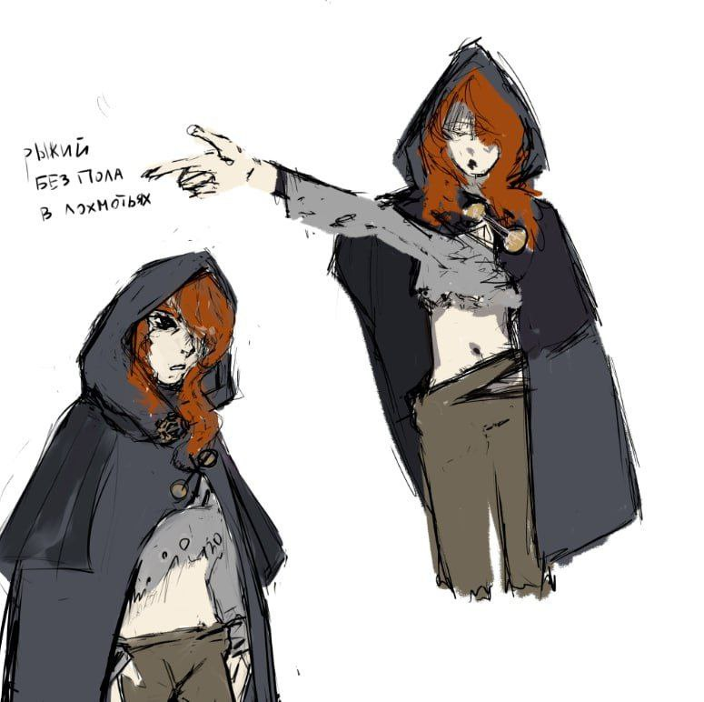
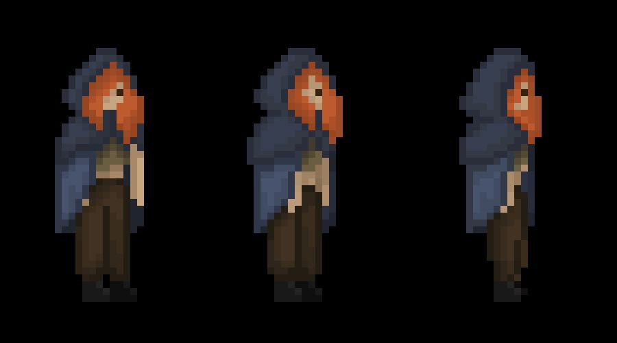
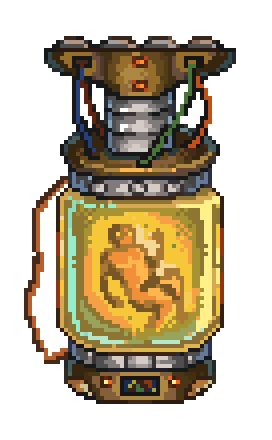
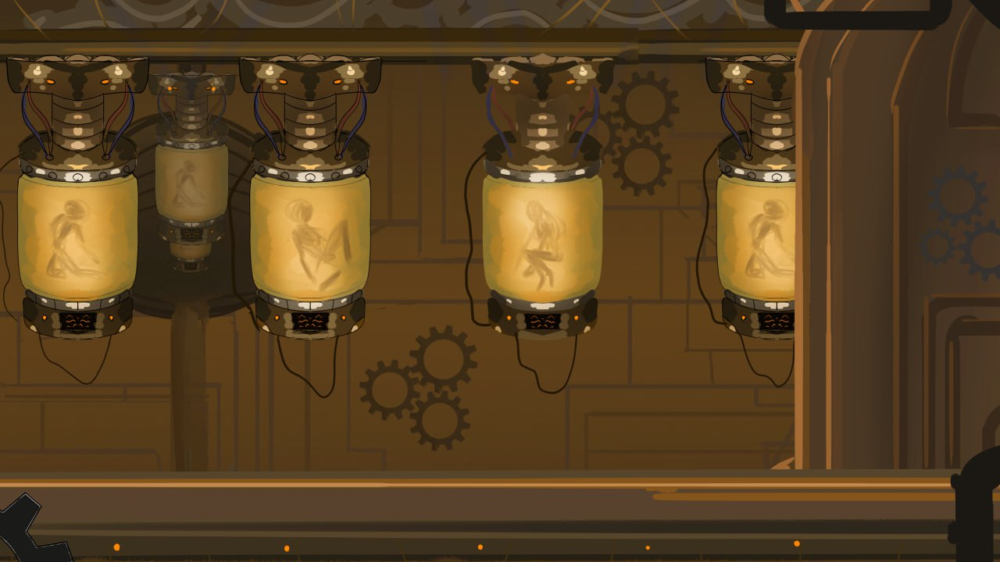
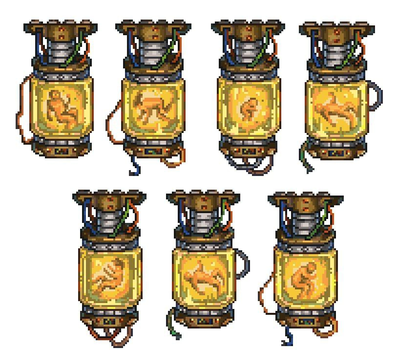
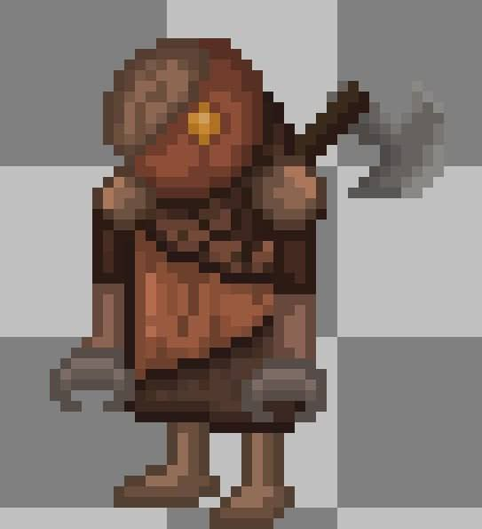
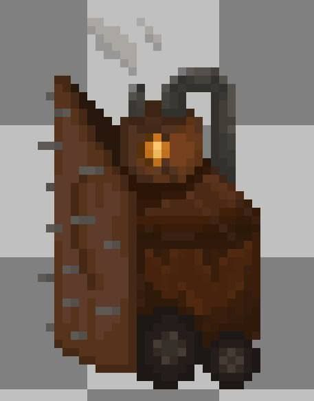
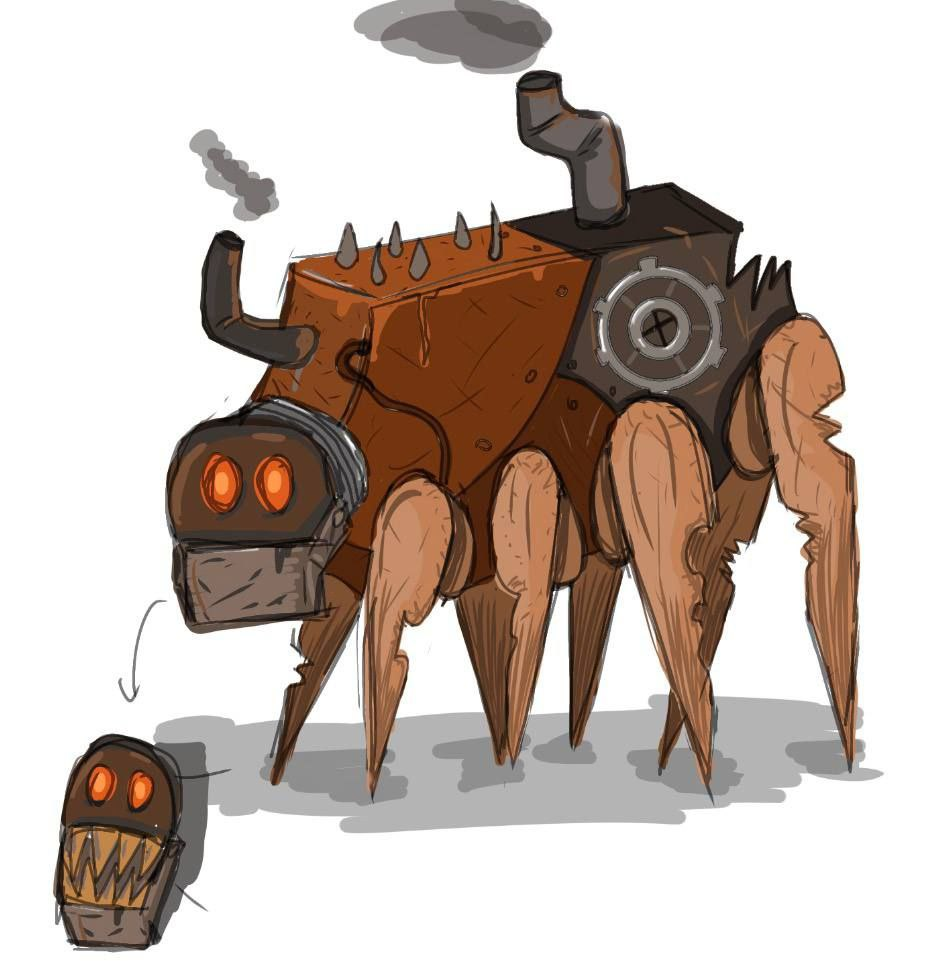

ЖУРНАЛ РАЗРАБОТКИ
Первые шаги в создании Dark Machine
Первый отчёт о разработке Dark Machine. За прошедшую неделю команда проделала работу по созданию фундамента игры.
Визуальная часть
Концепт-арт персонажа — завершены детализированные концепт-арты главного героя в профиль и полубоком.


Дизайн окружения — разработаны первые комнаты завода, био-колбы, элементы индустриального окружения и виньетки.


Звук
Написан OST для первых комнат — эмбиент с механическими шумами и давящей атмосферой.
Программирование
Создана билд-песочница для тестирования механик:
Био-колбы, враги и карты уровней
За последние две недели команда значительно продвинулась в создании контента. Сфокусировались на детализации ключевых элементов игры.
Био-колбы
Завершена работа над спрайтами био-колб — ключевым элементом сеттинга. Созданы 7 различных вариантов наполнения, каждый с уникальным содержимым.

Дизайн врагов
Разработаны концепт-арты и спрайты первых противников — механические существа, охраняющие завод. Созданы три типа врагов с уникальным дизайном.



Социальные сети
Запущены официальные страницы проекта: VK, YouTube, X (Twitter).
Итоги недели: спринт в полном разгаре
Еженедельный отчёт о прогрессе команды. На этой неделе сфокусировались на реализации конкретных задач.